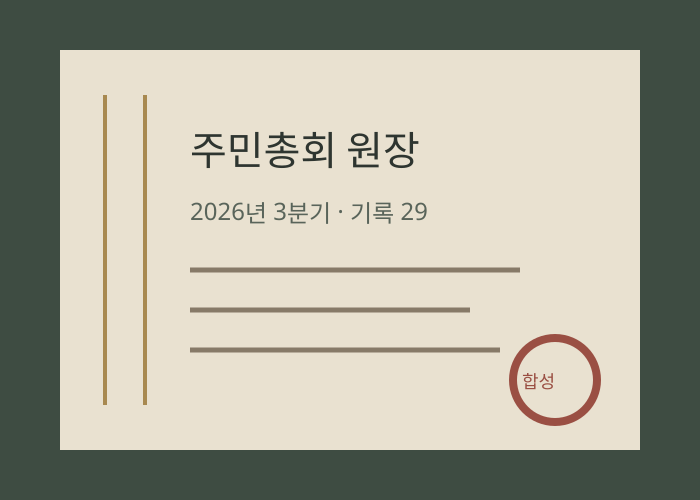
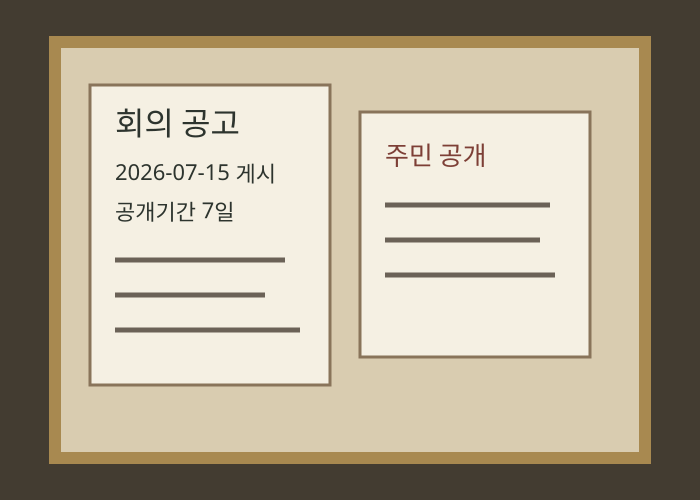
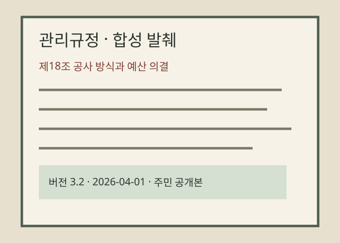
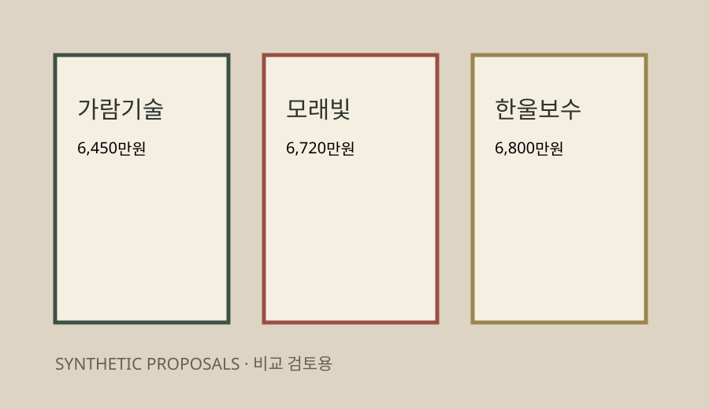
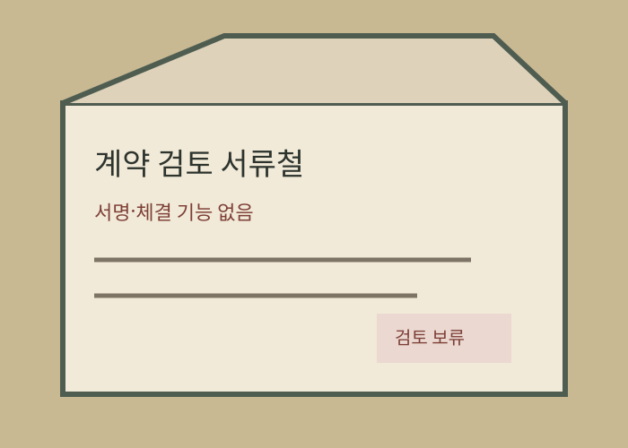
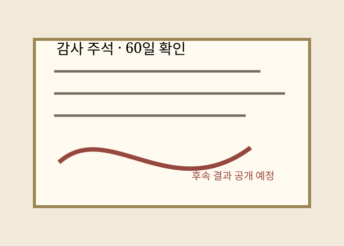
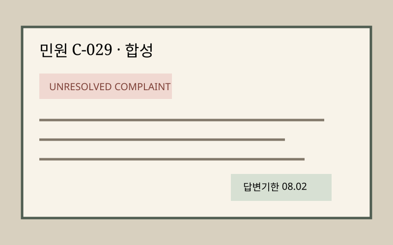

아직 열려 있는 질문
01 2개 구역의 우선순위 기준은 충분히 공개됐는가?
02 60일 성능 확인 후 추가 공사의 의결 권한은 누구에게 있는가?
03 반대 의견의 기술적 근거가 최종 공고에 보존됐는가?
BUSINESS 29 · APARTMENT GOVERNANCE
방림명지로드힐아파트 · GOVERNANCE LEDGER 029
101동·102동 · 192세대의 회의, 규약, 공고, 의결, 민원, 지출, 후속조치와 주민 공개 기록을 하나의 운영 이력으로 연결합니다.
안건·회의일·예산·공개기간 등 데모용 예시 값은 실제 확정 자료가 아닙니다. 개인정보 포함 자료는 공개 전 검토·가림처리합니다.


01 2개 구역의 우선순위 기준은 충분히 공개됐는가?
02 60일 성능 확인 후 추가 공사의 의결 권한은 누구에게 있는가?
03 반대 의견의 기술적 근거가 최종 공고에 보존됐는가?
MEETING AUTHORITY / 회의 권한
7일 공개 · 제5기 입주자대표회의
두 구역 우선 보수안
공사 방식과 예산 상한은 회의 의결
가람 6,450 · 모래빛 6,720 · 한울 6,800
반대 의견은 완료 후에도 원장에 유지됩니다.
찬성 4 · 반대 1 · 기권 1 — 데모 예시
예산 상한·반대 의견·후속 확인 기한 포함

RULEBOOK / 규정집
BMRH-RULE-18 · VERSION 3.2
공용부분 보수 공사 방식과 예산 상한은 공고된 안건과 비교자료를 바탕으로 의결한다. 개인정보와 영업상 비공개 정보는 공개본에서 가린다.
SPENDING & CONTRACT / 지출·계약

| 업체 | 금액 | 범위 | 상태 |
|---|---|---|---|
| 가람기술 | 6,450만원 | A·B 구역 | 조건 확인 |
| 모래빛시설 | 6,720만원 | A·B 구역 | 기간 우수 |
| 한울보수 | 6,800만원 | A·B 구역 | 보증 우수 |
APPROVED SPENDING · 6,720만원 한도 내 협상


ELECTION RECORD / 선거 기록
COMPLAINT → FOLLOW-UP / 민원·후속

누수 보수 기간 중 주차구역 이동 안내가 부족하다는 데모 민원.
공사 3일 전 동별 안내와 임시 주차구역 지도를 공개하기로 함.
공사 실행계획의 공개 항목으로 편입.
2개 구역 우선 보수 후 60일 성능 확인.
관리규정 제18조 v3.2 · 공사 방식과 예산 의결.
상한 6,800만원 · 승인 지출은 한도 내 협상.
전면 보수 전 원인 진단을 먼저 해야 한다는 의견 유지.
개인정보 포함 자료는 공개 전 검토·가림처리합니다. 전자투표·결제·계약·제출 기능은 없는 390px 전용 시각 참고 구성이며, 데모용 예시 값은 실제 확정 자료가 아닙니다.